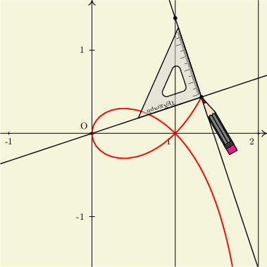
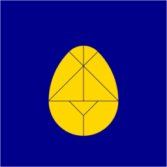

Galerie Animations

Les exemples ci-dessous illustrent l'utilisation du modèle Animations.mod. TeXgraph peut enregistrer l'animation en javascript (une image svg par frame, celles-ci sont ensuite visionnées dans un cadre muni de boutons). L'animation peut également être enregistrée dans un fichier pdf avec une frame par page (chaque frame est export en tikz). Ce fichier pdf peut être transformé en gif animé, ou en flash (qui n'est plus conseillé) à condition d'avoir l'utilitaire l'utilitaire pdf2swf de la suite swftools qui est invoqué pour effectuer la conversion de pdf vers flash.
Il suffit de cliquer sur l'image pour faire apparaître l'animation.
Équerre de Newton

Illustration d'une propriété de la strophoïde droite permettant de tracer celle-ci avec une équerre. Le fichier utilise les macros du modèle instrumentsDessin.mod de Joffrey Cottin. (fichier source)
Tangram

Différentes figures de tangram avec transitions. Lorsqu'une pièce donne l'impression de sauter, c'est parce qu'elle est retournée. (fichier source)